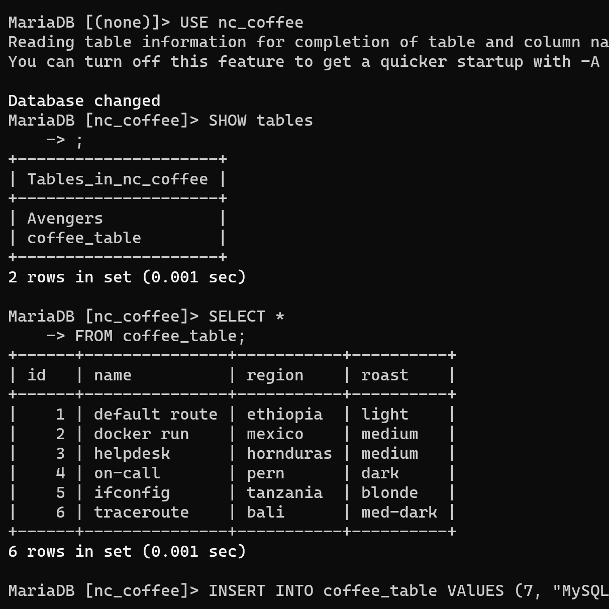

SQL Databases
I have been experimenting with SQL databases on Linux using MySQL, on a Raspberry Pi as extra work for my "Google Cybersecurity" Course.
HTML, CSS and JavaScript
When I started in HTML, I would just make those "no CSS" sites in notepad. But then I stated to get ChatGPT to do the CSS for me, and after a while I learned how to do CSS myself.

API
I have made many API's for many uses such as my Slicer MC API that stores slice ID's and Player UUIDs in a JSON database.
Minecraft Paper Plugin Development
I have made a few minecraft plugins such as SlicerPlotGen, SlicerStaffSommands and I am working on porting a minecraft mod the bukkit/spigot.